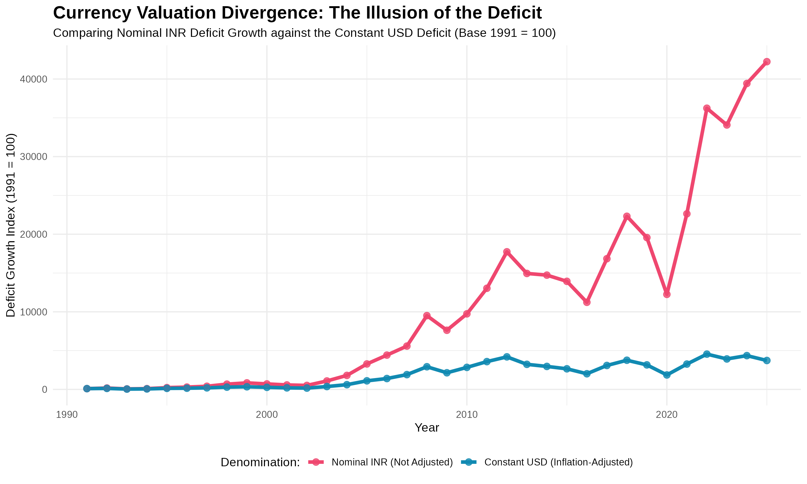
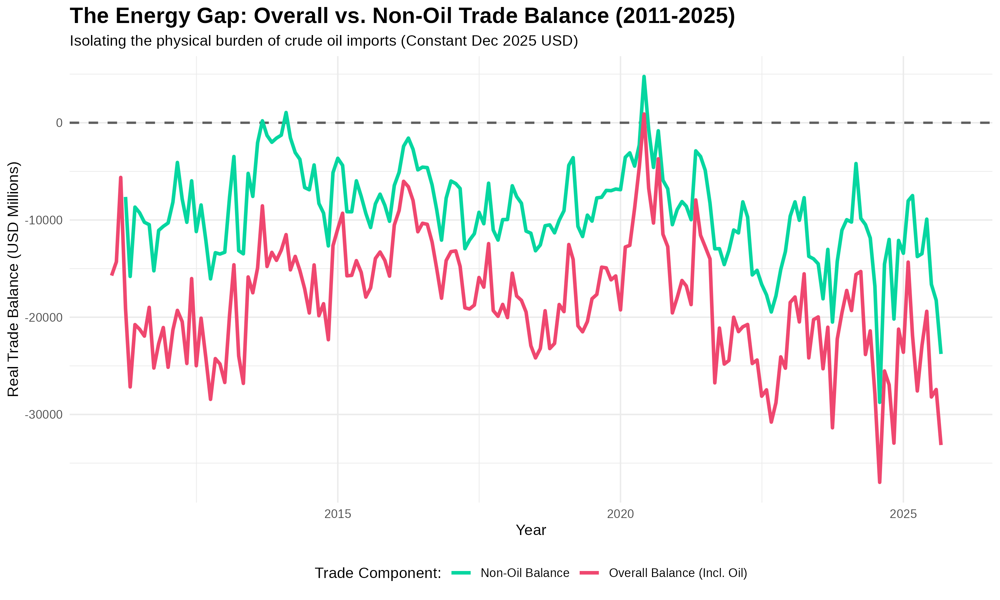
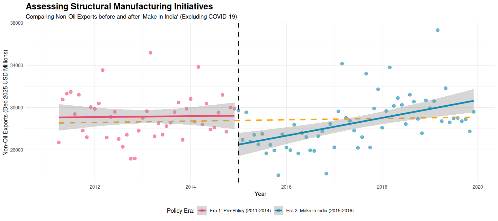
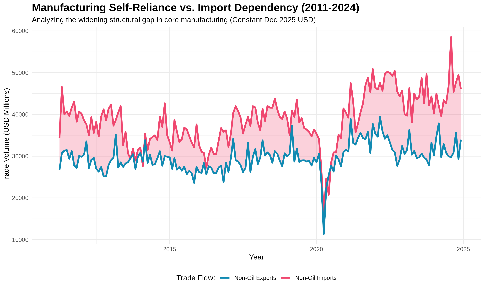
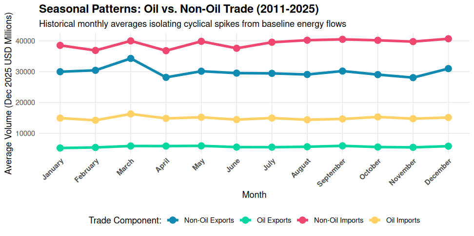
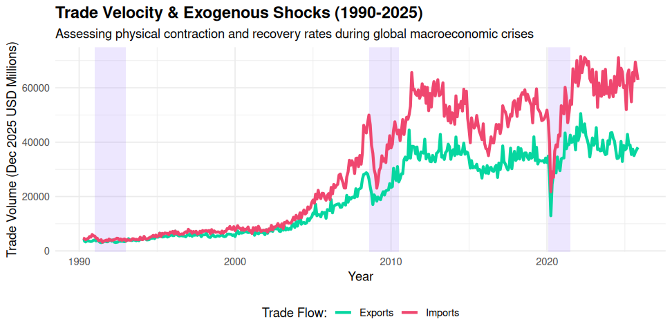

India's merchandise trade has run a persistent deficit since liberalization in 1991. Media and policy narratives often cite nominal Rupee figures to demonstrate an exponentially growing economic gap.
Our objective is to move beyond surface-level figures. We aim to empirically isolate the true structural drivers of the deficit by stripping away the mathematical distortions of currency depreciation and global price inflation.
By applying a constant-dollar methodology to 35 years of RBI data, we structured our empirical analysis to answer four critical questions regarding the Indian economy:
How much of the reported deficit "explosion" since 1991 is a genuine physical expansion versus a mathematical distortion caused by Rupee depreciation?
If we strip away inelastic crude oil imports, is India's core domestic manufacturing sector actually failing on the global stage?
Did the "Make in India" initiative structurally accelerate physical export volumes prior to the pandemic, or merely sustain existing momentum?
As India attempts to scale its manufacturing exports, is the non-oil sector becoming more self-reliant or increasingly trapped in an import-dependency loop?
Public reporting overwhelmingly denominates India's trade deficit in Nominal Indian Rupees (INR).
Since 1991, the Rupee has experienced persistent, severe depreciation against the US Dollar. Concurrently, the global economy has experienced decades of compounding price inflation.
The apparent parabolic explosion of India's trade deficit is largely a mathematical illusion driven by a denominator effect (currency devaluation), rather than a geometric expansion of the physical trade gap.
We established a Base-100 Index (where 1991 = 100) to track two distinct vectors over 35 years:

When measured in inflation-adjusted Constant USD, the physical magnitude of the trade deficit grew by roughly 4,100% from 1991 to 2025. While notable, the trajectory remains heavily bounded and relatively linear.
The exact same physical trade gap, when reported in Nominal Rupees, appears to have grown by an astronomical 46,100%. The parabolic curve is an artifact of currency depreciation.
Evaluating India's macroeconomic health through nominal INR figures introduces catastrophic analytical bias. The perceived growth of the deficit is artificially magnified by a factor of ten.
To ensure academic rigor, the remainder of this analysis utilizes Constant Dec 2025 USD exclusively.
Having established the true volume of the deficit, we must identify its primary driver. The dominant narrative often attributes India's trade gap to a broad weakness in domestic manufacturing.
This ignores a critical structural reality: India is the world's third-largest importer of crude oil, an inelastic energy commodity.
When crude oil is stripped from the ledger, India's core manufacturing sectors will demonstrate a trade balance significantly closer to equilibrium.

When crude oil is mathematically stripped from the ledger, the Non-Oil Trade Balance hovers close to zero. In several recorded months, India's core manufacturing sectors actively ran a physical trade surplus.
The Overall Trade Balance remains deeply negative. Because inflation has been controlled for, the massive vertical gap proves the deficit is a physical dependency on foreign energy.
Characterizing India's trade deficit as a broad failure of domestic manufacturing is empirically inaccurate. Stripped of petroleum imports, India's core merchandise trade demonstrates significant resilience.
Policy Implication: Accelerating domestic energy transitions (renewables, nuclear) will yield a more dramatic impact on the trade balance than generic manufacturing incentives.
If domestic manufacturing is not fundamentally failing, did major federal interventions successfully elevate it?
In September 2014, the Government launched "Make in India." Evaluating this policy requires strict methodological controls: converting to Constant USD to measure physical output, and excluding post-2019 data to prevent COVID-19 volatility from skewing the regression slopes.
The trajectory slope and Compound Annual Growth Rate (CAGR) of inflation-adjusted non-oil exports will show a statistically significant upward acceleration in the post-policy era.
We partitioned the data into two controlled cohorts:
We executed a CAGR analysis on physical export volumes and generated a segmented linear regression to detect any structural breaks.

Pre-Policy (Era 1): 10.26%
Make in India (Era 2): 2.70%
Overall 13-Year Baseline: 2.91%
Mathematical calculations reveal a massive collapse in export velocity. The policy failed to sustain the pre-existing baseline trend, presiding over a severe deceleration in physical export compounding.
While the visual regression line for Era 2 appears to angle upward, it merely reflects a slow, sluggish recovery out of the severe 2015 global commodity crash. It completely failed to restore the double-digit momentum of the pre-policy years.
During its first five years, the initiative failed to radically steepen India's manufacturing competitiveness trajectory. Stripped of pricing illusions, the policy's early footprint appears to be a mere continuation of momentum.
Caveat: Heavy manufacturing infrastructure requires substantial gestation. A 5-year window may capture implementation lags rather than ultimate efficacy.
If export growth is relatively stagnant, what is occurring beneath the surface of the non-oil sector? A common assumption is that growing export volumes indicate a maturing, increasingly self-reliant manufacturing base.
This assumption fails if the sector exhibits high import elasticity. To produce one unit of manufactured export, India must import critical intermediate goods (semiconductors, APIs, machinery). Thus, scaling exports inherently scales imports.
If manufacturing were becoming self-reliant, the physical CAGR of non-oil exports should substantially outpace non-oil imports. We hypothesize the opposite.

Real Non-oil Exports CAGR: 2.91%
Real Non-oil Imports CAGR: 3.16%
Because imports already maintained a larger absolute base, this percentage disparity forces a geometric expansion of the structural deficit.
Even after eliminating all global inflation, the absolute physical non-oil trade gap expanded by 62.49% between 2011 and 2024. The shaded ribbon grows unmistakably wider.
India's domestic merchandise manufacturing remains deeply dependent on foreign capital goods and intermediate components.
As India attempts to scale its export volume, it structurally necessitates a simultaneous, disproportionate expansion of its import bill—effectively trapping the non-oil trade balance in an import-dependency loop.
India's reported trade deficit is artificially magnified 10x by nominal reporting. Macroeconomic health must be evaluated using constant-dollar metrics to avoid "analytical panic."
The merchandise deficit is fundamentally an energy deficit. Core non-oil manufacturing remains resilient and frequently operates near equilibrium.
"Make in India" has sustained existing growth trajectories rather than triggering a structural break. Physical export velocity remains consistent with pre-2014 trends.
High structural import elasticity dictates that export growth currently necessitates import growth. Scaling manufacturing requires deep domestic supply-chain integration.
While this empirical analysis provides significant structural insights, it operates within specific analytical constraints:
Nominal values were deflated by the US CPI, but the dataset lacks pure physical volume indices (e.g., tonnage). CPI is a robust proxy but cannot perfectly isolate complex price effects across highly heterogeneous non-oil sectors.
Only physical merchandise trade is tracked. India runs a massive global surplus in services (IT, BPO, consulting). Analyzing only merchandise significantly overstates the nation's true current account deficit.
The "Non-Oil" category remains heavily aggregated. Surges cannot be definitively attributed to specific sectors (e.g., consumer electronics versus gold imports), limiting the granularity of the assessment.
Data is aggregated at the global macro level. Geopolitical dependencies and shifting bilateral asymmetries (such as India's heavily asymmetric merchandise deficit with China) cannot be assessed here.
Compound Annual Growth Rate (CAGR) smooths out "noisy" middle volatility (e.g., the 2015 global slowdown) to isolate the true geometric progression of physical exports from the beginning to the end of a given era.
To measure pure physical trade volumes, we must strip away decades of global price inflation. A nominal dollar in 1991 represented vastly more physical merchandise than a nominal dollar today. By applying a mathematical deflator based on the US Consumer Price Index (FRED: CPIAUCSL), we standardized all historical trade values to Constant December 2025 US Dollars.
Our boxplot analysis confirms a significant, recurring surge in exports every March. This is not a structural boom, but a mechanical fiscal-year-end rush where firms front-load shipments to meet annual targets.
A consistent dip is observed during May and June. This seasonality reflects the physical reality of the Indian monsoon season, which historically hampers transport and port logistics.
Crucially, while seasonal cycles are volatile, the trendlines and deficits persist across all seasons. This proves our findings are structural, not just noise from the calendar.

The plot captures the first major structural deceleration of the 21st century. The global housing market collapse triggered a visible cooling period where the frantic growth of the early 2000s finally met global resistance.
This is the most violent "V-shaped" event in the 35-year history. It represents a total synchronized shutdown of global demand followed by the massive inflationary surge we see in the 2022-2024 recovery phase.
This overview stands independent of specific policy questions. It serves to prove that India is a deeply integrated global player; our trade balance is as much a victim of global health as it is a product of domestic initiative.
